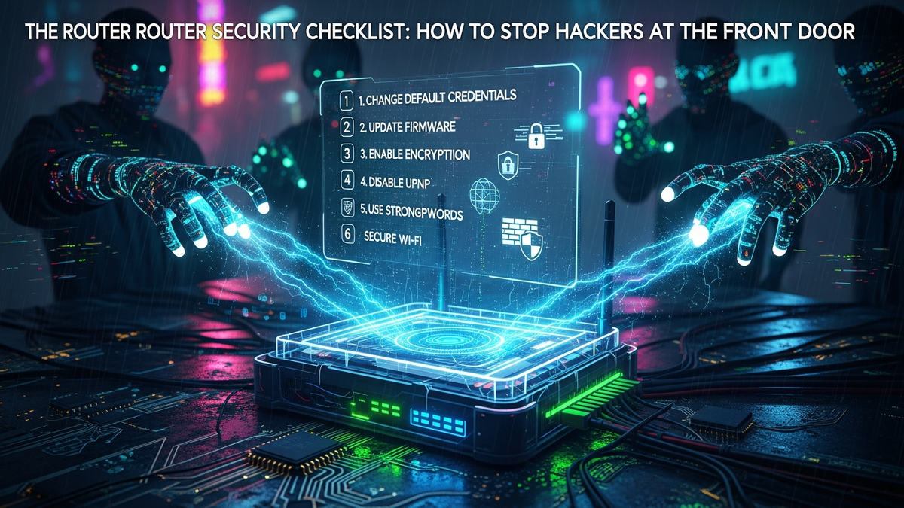

Your home router, often overlooked and underappreciated, stands as the critical gateway between your personal digital world and the vast, often hostile, expanse of the internet. It is, quite literally, the front door to your entire network, guarding access to your computers, smartphones, smart home devices, and all the sensitive data they contain. Yet, for many, this essential piece of hardware remains configured with factory defaults, unpatched firmware, and settings that leave it dangerously exposed. This complacency is a siren call for cybercriminals, who constantly scan for easy targets – and an unsecured router is precisely that. Ignoring router security is akin to leaving your physical front door wide open, assuming no one will walk in. The digital world is far less forgiving. From injecting malware and siphoning data to launching attacks from your network, the consequences of a compromised router can be severe and far-reaching, impacting not just your privacy but potentially your financial security and digital identity. Understanding the vulnerabilities and taking proactive steps to secure your router is no longer an optional chore; it is an absolute necessity in our interconnected lives. This comprehensive checklist is designed to empower you with the knowledge and actionable steps required to transform your router from a potential weak link into a formidable first line of defense against an ever-evolving landscape of cyber threats, ensuring your digital front door is bolted shut against unwanted intruders.
The journey to a secure router begins with two fundamental, yet frequently neglected, steps: eradicating default login credentials and maintaining an unwavering commitment to firmware updates. These actions, while seemingly basic, represent the bedrock of your router's defense, and their neglect is one of the most common entry points exploited by attackers. When a router leaves the factory, it often comes with a standard username and password, such as "admin/admin," "admin/password," or "root/1234." These defaults are not only widely known but are also often publicly documented and cataloged in vast databases used by hackers. An attacker doesn't even need advanced skills to guess these; they simply need to try common combinations, or worse, use automated scripts that cycle through thousands of known defaults in seconds. Leaving these in place is an open invitation for unauthorized access, allowing criminals to hijack your router, change settings, monitor your traffic, or even install malicious firmware. The very first step, therefore, must be to access your router's administration interface (usually via a web browser using an IP address like 192.168.1.1 or 192.168.0.1) and immediately change the default username and password to something strong and unique. A strong password should be a complex passphrase, mixing uppercase and lowercase letters, numbers, and symbols, and ideally be at least 16 characters long. Use a reliable password manager to generate and store this credential securely, ensuring you don't forget it. If your router allows changing the default username as well, take advantage of this feature to add another layer of obscurity, making it harder for automated attacks to succeed.
Beyond login credentials, router firmware is the operating system that governs its entire functionality. Just like the software on your computer or smartphone, router firmware can contain bugs and security vulnerabilities that, if unpatched, can be exploited by malicious actors. Manufacturers regularly release updates to address these flaws, improve performance, and sometimes introduce new features. Neglecting these updates leaves your router exposed to known exploits, essentially giving hackers a roadmap to compromise your device. Imagine a security guard at your front door who never learns about new lock-picking techniques; eventually, a skilled thief will bypass them. Similarly, an outdated router firmware is a security vulnerability waiting to be exploited. The process for updating firmware varies slightly between manufacturers, but generally involves logging into the router's administration panel, navigating to a "Firmware Update" or "System Tools" section, and either clicking an "auto-update" button or manually uploading a firmware file downloaded from the manufacturer's official support website. Always download firmware directly from the manufacturer's site to avoid malicious tampered versions. Before performing an update, it's wise to back up your router's current configuration, if the option is available, as a safeguard. Set a recurring reminder to check for new firmware updates at least once a month, or enable automatic updates if your router supports them and you trust the manufacturer's update process. While automatic updates offer convenience, some users prefer manual updates for greater control and to review release notes for potential issues. The consistent vigilance in updating firmware ensures that your router benefits from the latest security patches, closing known backdoors and bolstering its resilience against emerging cyber threats. These two foundational steps – changing defaults and updating firmware – are non-negotiable for a truly secure home network.
Once the foundational elements of default credentials and firmware are addressed, the next critical steps involve architecting your network with intelligent segmentation and robust encryption. These measures create layers of defense, making it significantly harder for an attacker to gain widespread access even if they manage to breach one part of your system. Network segmentation, primarily achieved through the implementation of a Guest Network, is a powerful strategy for isolating potentially vulnerable devices and limiting the scope of a breach. In today's smart homes, we often connect a myriad of devices to our Wi-Fi: smart TVs, IoT gadgets like smart plugs and cameras, gaming consoles, and visitors' smartphones. Many of these devices, especially older IoT gadgets, have weaker security protocols, infrequent updates, or are simply less trustworthy than your primary computing devices. Connecting them all to your main Wi-Fi network creates a flat network where a compromise on one device could potentially expose all others. A guest network, on the other hand, isolates these devices onto a separate subnet, preventing them from directly communicating with your main computers, servers, or sensitive data storage. This means if a smart bulb or a visitor's phone gets infected, the malware is largely contained within the guest network, unable to easily pivot to your critical devices. Setting up a guest network usually involves logging into your router's admin interface, finding the "Wireless" or "Guest Network" settings, enabling it, and giving it a unique SSID (network name) and a strong, separate password. Ensure that client isolation is enabled on the guest network, which prevents devices on the guest network from communicating with each other, adding another layer of security. This strategic isolation is crucial for mitigating risks associated with the expanding ecosystem of connected devices in our homes.
Complementing network segmentation is the absolute necessity of robust Wi-Fi encryption. The encryption protocol you use determines how securely data travels wirelessly between your router and your devices. Outdated or weak encryption is like building a strong wall but leaving a giant, easily readable signpost directing intruders to a weak spot. Historically, protocols like WEP and WPA have been proven to be critically flawed and are easily cracked by even amateur hackers. Using these is equivalent to having no encryption at all. The current industry standard for strong Wi-Fi security is WPA2-PSK (AES), and even better, the newer WPA3. WPA3 offers enhanced cryptographic strength, more resilient protection against brute-force attacks, and improved privacy features like individualized data encryption in open public Wi-Fi networks (though this specific feature is for public Wi-Fi, the core protocol improvements benefit home networks). If your router and devices support WPA3, it should be your immediate choice. Configure your Wi-Fi network to use WPA3, or if WPA3 is not available, ensure it is set to WPA2-PSK with AES encryption (avoiding TKIP, which is less secure). Never use "mixed mode" if it includes WEP or WPA, as the network will default to the weakest common denominator. Crucially, your Wi-Fi password (often called a passphrase) must be strong and unique. Unlike your router's admin password, which protects access to the router's settings, your Wi-Fi password protects the wireless connection itself. It should be a long, complex passphrase, ideally 20 characters or more, incorporating a mix of upper and lower case letters, numbers, and symbols. Avoid using personal information, common dictionary words, or sequential numbers. A memorable but complex passphrase, perhaps a sentence with intentional misspellings and added numbers/symbols, is ideal. Again, a password manager can generate and store this securely. Regularly changing your Wi-Fi password, perhaps every 3-6 months, adds another layer of security, especially if you've had guests or shared it with temporary users. By segmenting your network and enforcing the strongest possible encryption with a robust passphrase, you create a formidable barrier against unauthorized access and data interception, significantly raising the bar for any would-be attacker.
Moving beyond the fundamental and architectural layers, advanced hardening involves fine-tuning your router's internal mechanisms, specifically its firewall, port configurations, and service controls. These steps significantly reduce your network's attack surface by closing unnecessary entry points and disabling features that, while convenient, often harbor significant security risks. Your router's built-in firewall acts as the primary gatekeeper for network traffic, scrutinizing incoming and outgoing data packets to determine if they are authorized to pass. Most consumer routers come with a basic firewall enabled by default, often using Stateful Packet Inspection (SPI) to track active connections and only allow legitimate responses back into your network. However, it's crucial to verify that your firewall is indeed active and configured to block all unsolicited incoming connections from the internet. Unless you are hosting specific services that require external access, your router's firewall should be configured to be as restrictive as possible, preventing any unknown external requests from reaching your internal network. While consumer router firewalls typically don't offer the granular control of enterprise-grade solutions, understanding their basic function and ensuring they are enabled is paramount. Some advanced routers may allow you to create specific firewall rules, such as blocking certain IP addresses or ranges, which can be useful if you identify a persistent threat source. Always err on the side of caution: block first, and only open ports or allow traffic if absolutely necessary and fully understood.
A significant aspect of advanced hardening involves disabling network services that pose unnecessary risks. Among the most critical to address are WPS (Wi-Fi Protected Setup), UPnP (Universal Plug and Play), and remote management features. WPS, while designed to simplify connecting devices to Wi-Fi with a simple button press or an 8-digit PIN, has a critical security flaw: its PIN can be brute-forced relatively quickly due to a design flaw that allows an attacker to check the first four digits and the last four digits separately. Once the PIN is cracked, the attacker gains access to your Wi-Fi password. Most routers allow you to disable WPS through their admin interface; doing so is highly recommended. UPnP, on the other hand, is a protocol that allows devices on your network to automatically discover and communicate with each other, and crucially, to automatically open ports on your router's firewall. This convenience is a double-edged sword: while it simplifies setup for applications like online gaming or media streaming, it also allows malware or compromised devices on your internal network to bypass your firewall and expose services to the internet without your explicit permission. This creates a significant security hole. Unless you have a specific, well-understood need for UPnP and are confident in the security of all devices on your network, it should be disabled. You can typically find the UPnP setting under advanced network or NAT forwarding options in your router's administration panel. If you need to open ports for specific applications, use manual port forwarding, which gives you precise control over which internal IP address and port are exposed, and only for the duration it's needed.
Protect your identity and browse privately with Surfshark One - the all-in-one security suite.
GET 60% OFF SURFSHARK NOWFinally, consider the implications of remote management. Many routers offer the ability to access their administration interface from outside your home network, which can be convenient for troubleshooting when you're away. However, this also exposes your router's control panel directly to the internet, making it a prime target for attackers. If remote management is not absolutely essential, disable it entirely. If you genuinely require remote access, implement robust security measures: ensure you are using a strong, unique password (different from your local admin password if your router allows it), change the default remote management port (e.g., from 80 or 443 to a non-standard, high-numbered port like 8443 or 10000+), and if possible, restrict access to specific IP addresses (e.g., your work IP address) or use a VPN to securely connect to your home network before accessing the router. Some advanced routers might even support two-factor authentication for remote access, which should be enabled if available. These advanced hardening steps require a bit more technical understanding but are crucial for minimizing your router's exposure to sophisticated attacks and ensuring that only authorized traffic and services are allowed to operate on your network, effectively closing potential backdoors that hackers might exploit.
Even with the most robust initial configurations, router security is not a "set it and forget it" endeavor. It requires continuous vigilance, much like a sentinel guarding a fortress. This ongoing watch involves regular monitoring of router logs, understanding the importance of physical security, maintaining an inventory of connected devices, and adopting periodic maintenance routines. Router logs are an invaluable, yet often ignored, source of information about what's happening on your network. These logs record various events, such as failed login attempts, connection attempts from external IP addresses, firewall blocks, device connections and disconnections, and system errors. Regularly accessing and reviewing these logs (usually found under a "System Logs," "Security Logs," or "Event Log" section in your router's admin interface) can help you detect suspicious activity that might indicate an attempted breach or a compromised device. For instance, a flurry of failed login attempts from an unknown external IP address is a clear indicator of a brute-force attack. Similarly, unusual outbound connections or repeated firewall blocks could signal a device on your network trying to communicate with a malicious server. While interpreting raw log data can be daunting, look for patterns, unfamiliar IP addresses, and repeated error messages. If your router has the capability, consider configuring it to send log alerts to your email or a syslog server for more proactive monitoring. Even a quick weekly review can make a significant difference in catching threats early. Understanding what constitutes normal activity on your network makes it easier to spot anomalies, turning your router's log files into a powerful diagnostic and security tool.
Beyond digital defenses, the physical security of your router is a frequently overlooked but critically important aspect. All the strong passwords and advanced configurations in the world can be undone if an unauthorized individual gains physical access to your router. With physical access, an attacker could potentially: perform a factory reset, wiping all your carefully configured security settings and reverting to defaults; connect directly to the router via an Ethernet cable to bypass Wi-Fi security; or even install a hardware tap to monitor traffic. Therefore, your router should be placed in a secure, inconspicuous location that is not easily accessible to visitors, children, or anyone who shouldn't have direct access. Avoid placing it in an open, public area of your home. If possible, consider securing it in a locked cabinet or using cable ties to prevent tampering with power or network cables. While this might seem extreme for a home environment, for small businesses or shared living spaces, it becomes a more pertinent concern. Ensuring that the reset button on your router is not easily pressed accidentally or by an unauthorized person is also part of this physical security consideration. If the router is reset, it typically reverts to factory default settings, including the default login credentials and Wi-Fi password, effectively undoing all your security efforts.
Maintaining a detailed device inventory is another proactive measure. Knowing exactly which devices are connected to your network at any given time helps you identify unauthorized intruders. Your router's administration interface usually has a "Connected Devices" or "DHCP Client List" section that displays the MAC addresses and sometimes the hostnames of all currently connected devices. Periodically review this list against your known devices (laptops, phones, smart devices). If you spot an unfamiliar MAC address or a device you don't recognize, it could be an unauthorized connection. While MAC address filtering can be configured on most routers (allowing only specific MAC addresses to connect), it's important to understand its limitations: MAC addresses can be spoofed, so it shouldn't be relied upon as a primary security mechanism, but it can act as a minor deterrent against casual intruders. Finally, simple maintenance routines contribute significantly to router health and security. Periodically rebooting your router (e.g., once a month) can help clear its memory, refresh connections, and sometimes even apply pending updates that require a restart. This can also resolve minor performance issues and ensure the device is operating optimally. By adopting a mindset of continuous monitoring, safeguarding physical access, keeping track of connected devices, and performing routine maintenance, you transform your router from a static defense into a dynamic and actively protected gateway, significantly enhancing your overall network security posture against persistent and evolving threats.
While configuring your router with best practices forms the core of your defense, integrating external tools and leveraging advanced solutions can significantly enhance your router security and overall network resilience. These tools act as force multipliers, providing additional layers of protection, deeper insights, and more robust privacy measures that complement your router's built-in capabilities. One of the most potent tools for enhancing privacy and security, particularly for traffic originating from your devices, is a reputable VPN (Virtual Private Network) service. While a VPN primarily encrypts data *between your device and the VPN server*, thereby securing your internet traffic from your ISP and other snoopers, some advanced routers can be configured with a VPN client directly. This means all devices connected to that router automatically route their traffic through the VPN, providing blanket protection for every device on your network, including those that can't run VPN software themselves (like smart TVs or some IoT devices). Choosing a reliable VPN provider with a strong no-logs policy and robust encryption is paramount. This adds a critical layer of obfuscation and encryption to your outbound traffic, making it much harder for external entities to monitor your online activities, even if they somehow bypass your router's initial defenses.
Another crucial enhancement involves upgrading your network's DNS resolution. The Domain Name System (DNS) translates human-readable website names (like google.com) into machine-readable IP addresses. Traditional DNS queries are often unencrypted, making them vulnerable to eavesdropping and manipulation (DNS spoofing). Implementing Secure DNS services, such as DNS-over-HTTPS (DoH) or DNS-over-TLS (DoT), encrypts these queries, safeguarding your browsing privacy and making it harder for attackers to redirect you to malicious websites. Services like Cloudflare's 1.1.1.1, Google Public DNS (8.8.8.8), or Quad9 (9.9.9.9) offer secure, fast, and often privacy-focused DNS resolution. Many modern routers allow you to change the default DNS servers in their settings, pointing them to these secure alternatives. This ensures that all... and implement these strategies to ensure long-term success.
In summary, staying ahead of these trends is the key to business longevity and security. By following this guide, you maximize your growth and ensure a stable digital future.
Don't wait for the headlines. Our Private Telegram Channel delivers real-time AI security updates and digital wealth strategies before they go viral. Stay protected. Stay ahead.
⚡ JOIN THE 1% NOWNo sign-up required. Instantly check risks, analyze AI text, or calculate your digital finances.